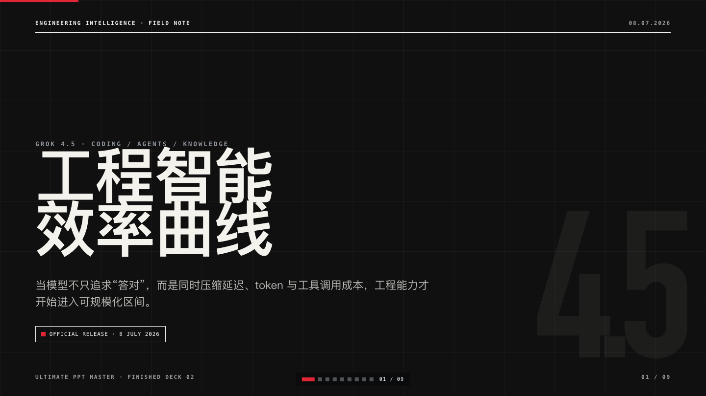
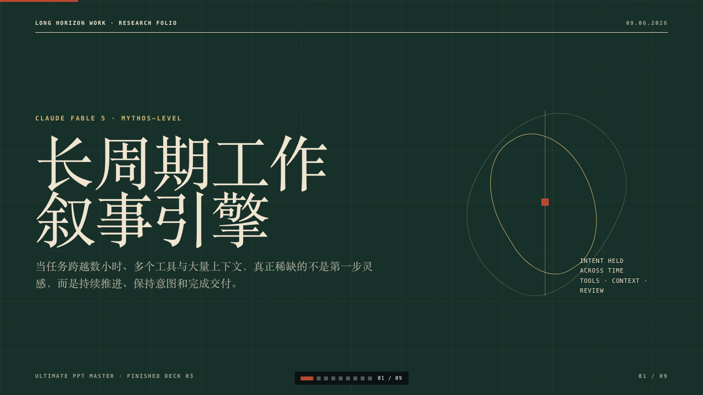

Orbit technology annual
GPT-5.6 · Three Orbits
Sol, Terra and Luna as a task-routing architecture: capability, preview pricing, workflow and boundaries.
View presentationPresentation cases · proof before promise
Three current AI topics, three complete visual systems, 27 source-grounded slides. Below them, every stable pack keeps the same inspectable chain: input -> preset -> output -> review.
Featured · July 2026
Each case is nine slides long, has its own art direction, and ends with primary sources. Grok uses the latest verified release, 4.5; no official Grok 4.6 release was found as of 10 July 2026.
Sol, Terra and Luna as a task-routing architecture: capability, preview pricing, workflow and boundaries.
View presentation
Open 9-slide deck →A fact-checked engineering brief on task completion, 80 TPS, token efficiency and native Office work.
View presentation
Open 9-slide deck →A warm editorial story about long-running work, project coherence, economics, safeguards and adoption.
View presentationStable preset evidence
The following packs remain the contract tests for public presets. Scores are self-assessed by Design Doctor; they are not external benchmark claims.
KPI reality, management conclusion, owner-led next actions.
Decision question, option comparison, recommendation, roadmap.
Product wedge, workflow proof, adoption ask.
Public signals, interpretation, implications, Web Deck rhythm.
The scorecard is a self-assessed by Design Doctor proof contract, not a claim of automatic repair or external comparison. The default is a report-only repair policy: generate quality-report.json, name risks in plain language, and only repair SVG files when the user explicitly asks for it.
Rubric fields include layout structure, source evidence, editability, public-demo safety, and whether the proof chain keeps input, preset, output, and review inspectable.